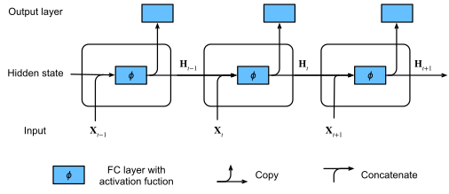

循环神经网络#
\(n\)-gram模型的参数量会随着\(n\)呈指数增长，因此与其模型化 \(P(x_{t}|x_{t-n+1},...,x_{t-1})\)，不如使用隐变量模型：
\[P(x_{t}|h_{t-1}) \approx P(x_{t}|x_{1},...,x_{t-1})\]
其中 \(h_{t-1}\) 存储着到时间步 \(t-1\) 的序列信息，这就是循环神经网络（recurrent neural networks，RNN）的思想。
模型#
回想全连接层:
\[\mathbf{H} = \phi(\mathbf{X}\mathbf{W}_{xh} + \mathbf{b}_{h})\]
其中 \(\mathbf{X}\in\mathbb{R}^{n\times{d}}\),\(\mathbf{W}_{xh}\in\mathbb{R}^{d\times{h}}\),\(\mathbf{b}_{h}\in\mathbb{R}^{1\times{h}}\),\(\mathbf{H}\in\mathbb{R}^{n\times{h}}\).
引入了时间步的概念之后，事情会变得有些不一样。假设 \(t\) 时刻的输入为 \(\mathbf{X}_{t}\in\mathbb{R}^{n\times{d}}\)，隐藏状态为 \(\mathbf{H}_{t}\in\mathbb{R}^{n\times{h}}\)，那么RNN模型是如此更新隐藏状态的:
\[\mathbf{H}_{t} = \phi(\mathbf{X}_{t}\mathbf{W}_{xh} + \mathbf{H}_{t-1}\mathbf{W}_{hh} + \mathbf{b}_{h})\]
其中 \(\mathbf{W}_{hh}\in\mathbb{R}^{h\times{h}}\)， 激活函数 \(\phi\) 默认为 \(\mbox{tanh}\)。

实现#
import torch
from torch import nn
import torch.nn.functional as F
import d2l
#@save
class RNNModel(nn.Module):
"""RNN模型"""
def __init__(self, rnn_layer, vocab_size, **kwargs):
super(RNNModel, self).__init__(**kwargs)
# 比如说nn.RNN()
self.rnn = rnn_layer
# 词汇量的大小
self.vocab_size = vocab_size
# 输入vocab_size -> 隐藏状态num_hiddens -> 输出vocab_size
self.num_hiddens = self.rnn.hidden_size
# 是否双向
if not self.rnn.bidirectional:
self.num_directions = 1
self.linear = nn.Linear(self.num_hiddens, self.vocab_size)
else:
self.num_directions = 2
self.linear = nn.Linear(self.num_hiddens * 2, self.vocab_size)
def forward(self, inputs, state):
# shape of inputs: (`batch_size`, `num_steps`)
# shape of X: (`num_steps`, `batch_size`, `vocab_size`)
# 将输入的int转为one_hot表示
X = F.one_hot(inputs.T.long(), self.vocab_size).type(torch.float32)
# shape of Y: (`num_steps`, `batch_size`, `num_directions` * `num_hiddens`)
# shape of state: (`num_layers` * `num_directions`, `batch_size`, `num_hiddens`)
# state是最终的隐藏状态
Y, state = self.rnn(X, state)
# shape of output: (`num_steps` * `batch_size`, `vocab_size`)
output = self.linear(Y.reshape((-1, Y.shape[-1])))
return output, state
def begin_state(self, batch_size=1, device=d2l.try_gpu()):
if not isinstance(self.rnn, nn.LSTM):
# `nn.RNN` and `nn.GRU` takes a tensor as hidden state
return torch.zeros((self.num_directions * self.rnn.num_layers,
batch_size, self.num_hiddens), device=device)
else:
# `nn.LSTM` takes a tuple of hidden states
return (torch.zeros((self.num_directions * self.rnn.num_layers,
batch_size, self.num_hiddens), device=device),
torch.zeros((self.num_directions * self.rnn.num_layers,
batch_size, self.num_hiddens), device=device))
# 创建一个普通的RNN模型，vocab_size为100, num_hiddens为64
rnn = RNNModel(nn.RNN(input_size=100, hidden_size=64), vocab_size=100)
rnn
RNNModel(
(rnn): RNN(100, 64)
(linear): Linear(in_features=64, out_features=100, bias=True)
)